#601 · horizontal · horizontal · 2500x2013 · Public domain File:Frost Fair on the River Thames (1814).jpg · 1280x1031 https://commons.wikimedia.org/wiki/File:Frost_Fair_on_the_River_Thames_(1814).jpg
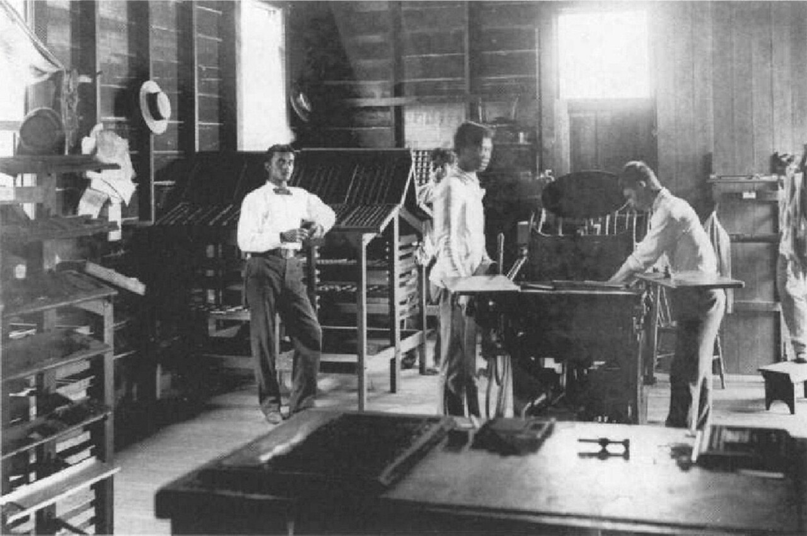
#602 · horizontal · horizontal · 1504x1000 · Public domain File:Kamehameha School for Boys Print Shop, 1897.jpg · 1280x851 https://commons.wikimedia.org/wiki/File:Kamehameha_School_for_Boys_Print_Shop,_1897.jpg#603 · horizontal · horizontal · 18040x13236 · Public domain File:Reise und Influenz-Karte der vorzüglichsten Eil-Post und Brancardwagen Course in dem Oesterreichischen Kaiserstaate. (IA dr reise-und-influenz-karte-der-vorzglichsten-eil-post-und-brancardwagen-cour-10167000).jpg · 1280x939 https://commons.wikimedia.org/wiki/File:Reise_und_Influenz-Karte_der_vorz%C3%BCglichsten_Eil-Post_und_Brancardwagen_Course_in_dem_Oesterreichischen_Kaiserstaate._(IA_dr_reise-und-influenz-karte-der-vorzglichsten-eil-post-und-brancardwagen-cour-10167000).jpg
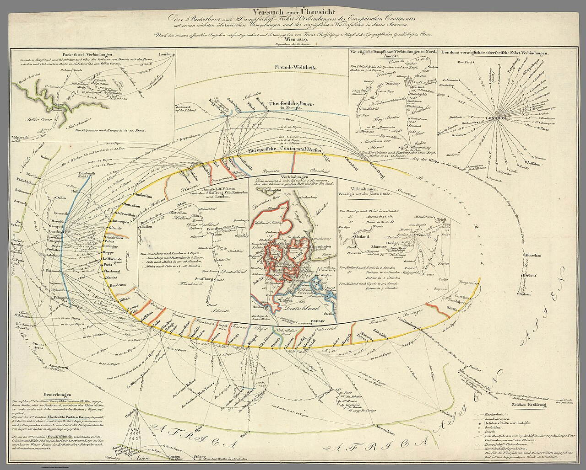
#604 · horizontal · horizontal · 11856x9524 · Public domain File:Versuch einer Übersicht der Packetboot- und Dampfschiff-Fahrt-Verbindungen des Europäischen Continentes mit seinen nächsten (IA dr versuch-einer-bersicht-der-packetboot-und-dampfschiff-fahrt-verbindungen-10504000).jpg · 1280x1028 https://commons.wikimedia.org/wiki/File:Versuch_einer_%C3%9Cbersicht_der_Packetboot-_und_Dampfschiff-Fahrt-Verbindungen_des_Europ%C3%A4ischen_Continentes_mit_seinen_n%C3%A4chsten_(IA_dr_versuch-einer-bersicht-der-packetboot-und-dampfschiff-fahrt-verbindungen-10504000).jpg
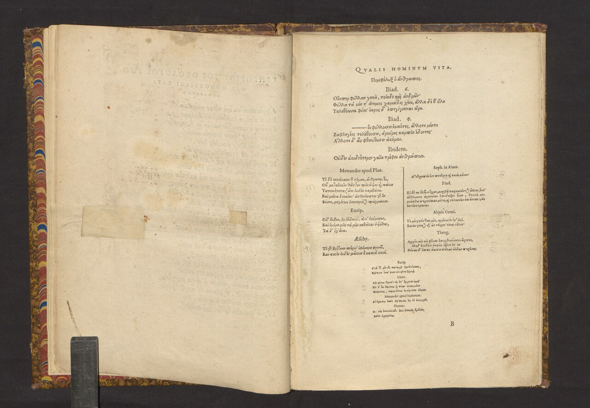
#605 · horizontal · horizontal · 6902x4784 · Public domain File:Christophe Plantin type specimen, 1567 spread 10.tif · 1280x887 https://commons.wikimedia.org/wiki/File:Christophe_Plantin_type_specimen,_1567_spread_10.tif
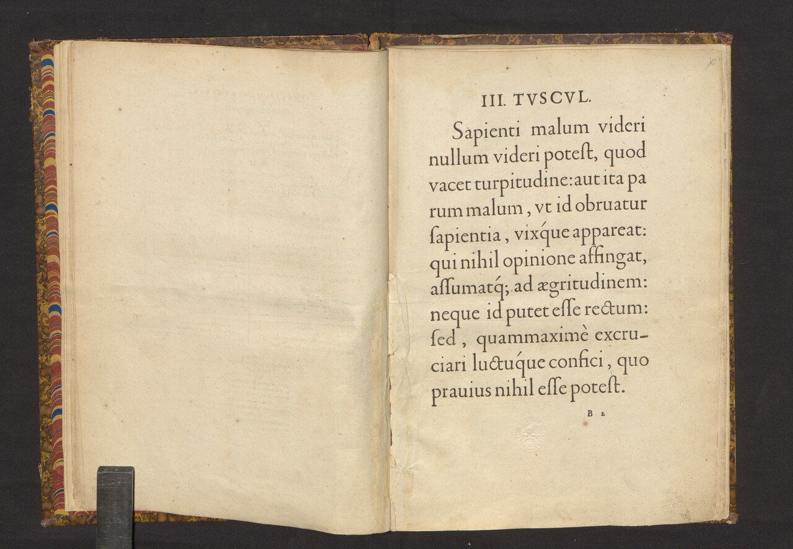
#606 · horizontal · horizontal · 6902x4784 · Public domain File:Christophe Plantin type specimen, 1567 spread 11.tif · 1280x887 https://commons.wikimedia.org/wiki/File:Christophe_Plantin_type_specimen,_1567_spread_11.tif
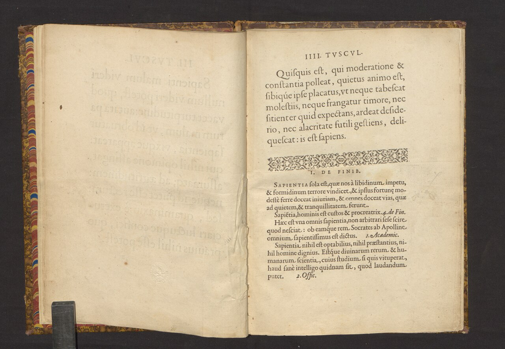
#607 · horizontal · horizontal · 6902x4784 · Public domain File:Christophe Plantin type specimen, 1567 spread 12.tif · 1280x887 https://commons.wikimedia.org/wiki/File:Christophe_Plantin_type_specimen,_1567_spread_12.tif
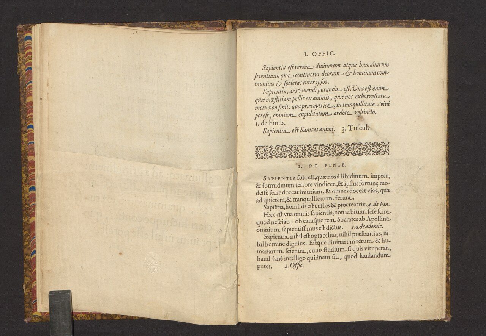
#608 · horizontal · horizontal · 6902x4784 · Public domain File:Christophe Plantin type specimen, 1567 spread 13.tif · 1280x887 https://commons.wikimedia.org/wiki/File:Christophe_Plantin_type_specimen,_1567_spread_13.tif
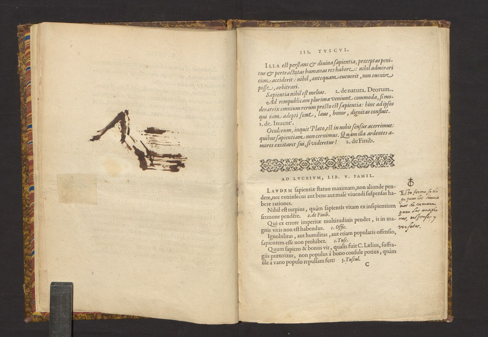
#609 · horizontal · horizontal · 6902x4784 · Public domain File:Christophe Plantin type specimen, 1567 spread 14.tif · 1280x887 https://commons.wikimedia.org/wiki/File:Christophe_Plantin_type_specimen,_1567_spread_14.tif
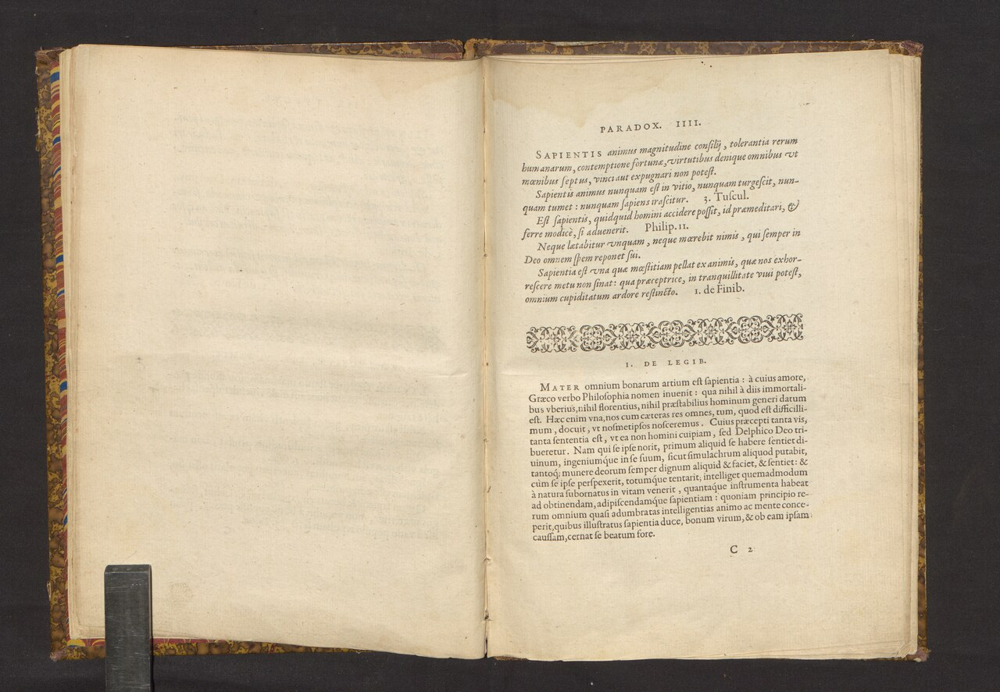
#610 · horizontal · horizontal · 6902x4784 · Public domain File:Christophe Plantin type specimen, 1567 spread 15.tif · 1280x887 https://commons.wikimedia.org/wiki/File:Christophe_Plantin_type_specimen,_1567_spread_15.tif
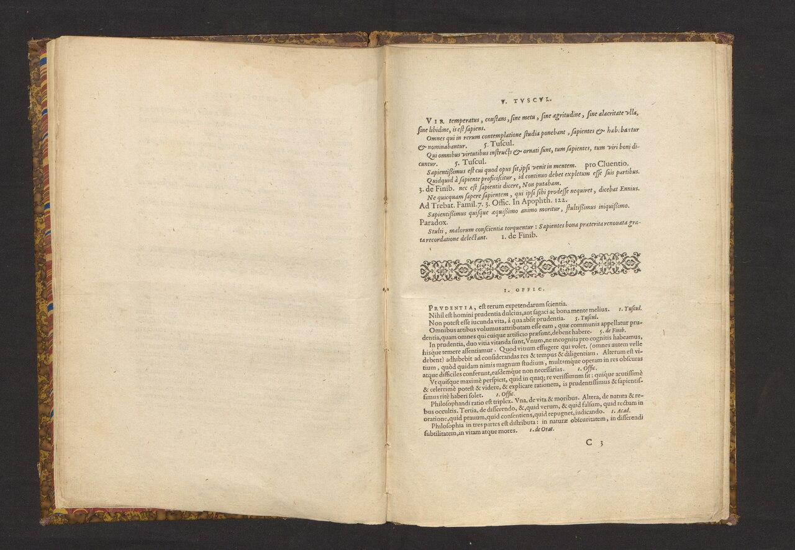
#611 · horizontal · horizontal · 6902x4784 · Public domain File:Christophe Plantin type specimen, 1567 spread 16.tif · 1280x887 https://commons.wikimedia.org/wiki/File:Christophe_Plantin_type_specimen,_1567_spread_16.tif
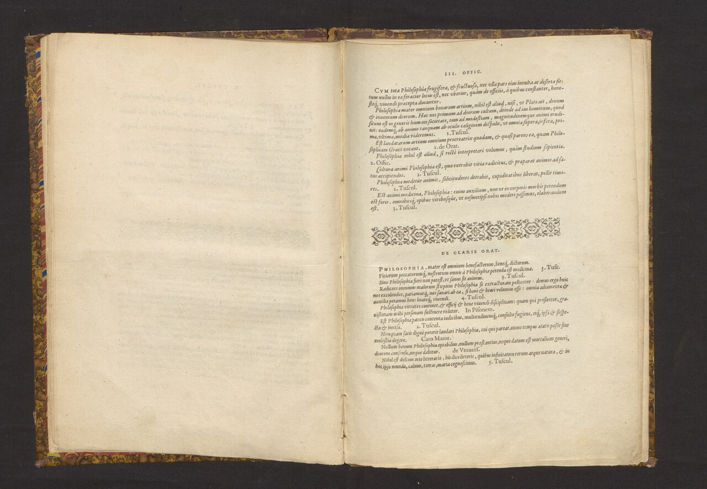
#612 · horizontal · horizontal · 6902x4784 · Public domain File:Christophe Plantin type specimen, 1567 spread 17.tif · 1280x887 https://commons.wikimedia.org/wiki/File:Christophe_Plantin_type_specimen,_1567_spread_17.tif
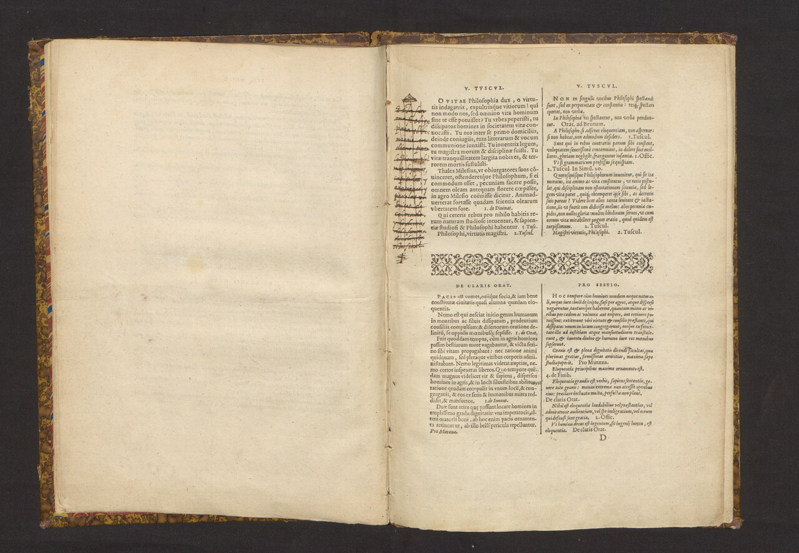
#613 · horizontal · horizontal · 6902x4784 · Public domain File:Christophe Plantin type specimen, 1567 spread 18.tif · 1280x887 https://commons.wikimedia.org/wiki/File:Christophe_Plantin_type_specimen,_1567_spread_18.tif
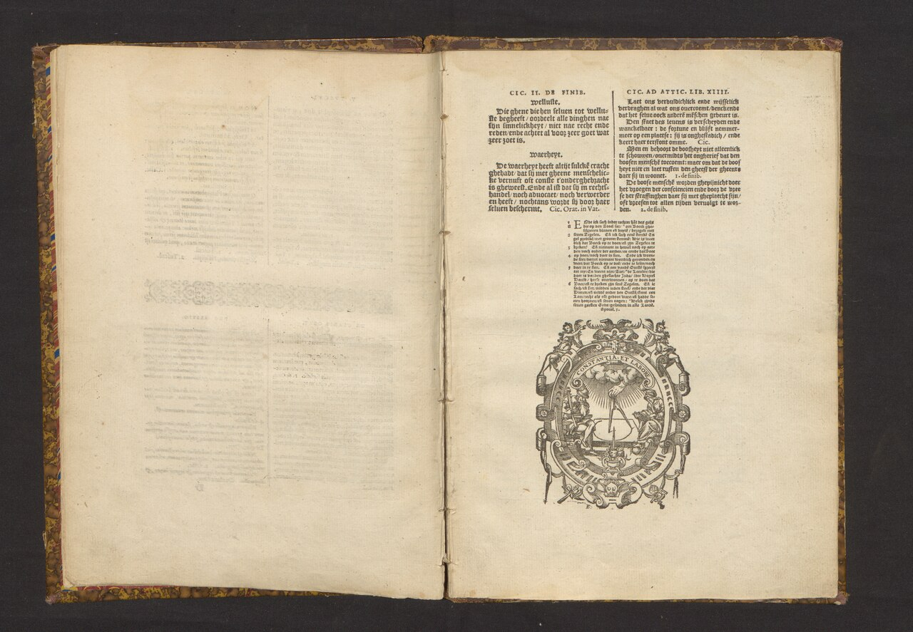
#614 · horizontal · horizontal · 6902x4784 · Public domain File:Christophe Plantin type specimen, 1567 spread 19.tif · 1280x887 https://commons.wikimedia.org/wiki/File:Christophe_Plantin_type_specimen,_1567_spread_19.tif
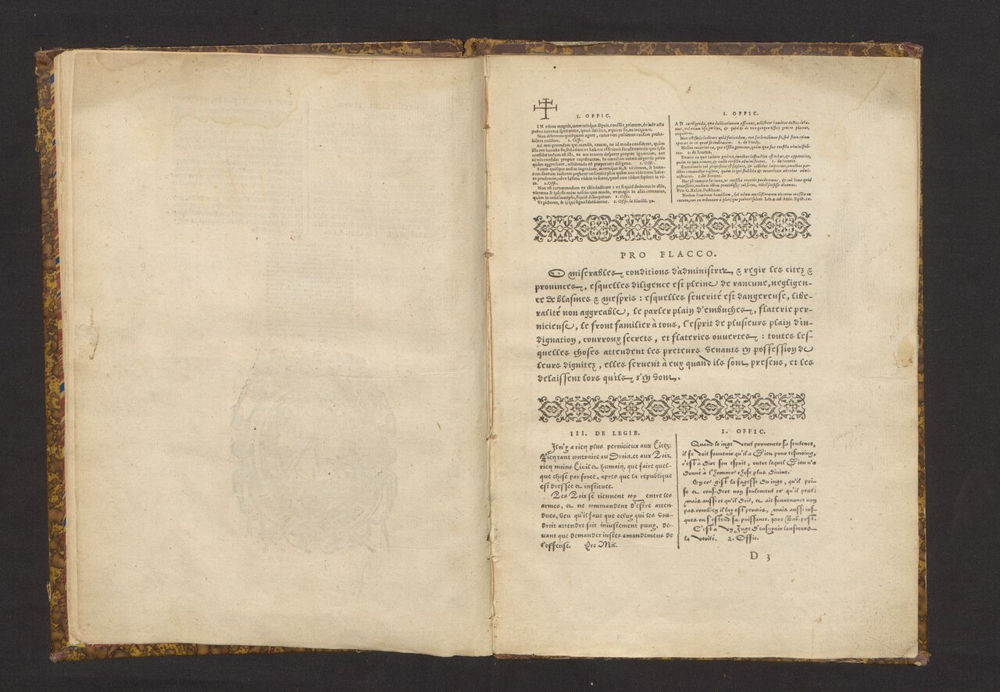
#615 · horizontal · horizontal · 6902x4784 · Public domain File:Christophe Plantin type specimen, 1567 spread 20.tif · 1280x887 https://commons.wikimedia.org/wiki/File:Christophe_Plantin_type_specimen,_1567_spread_20.tif
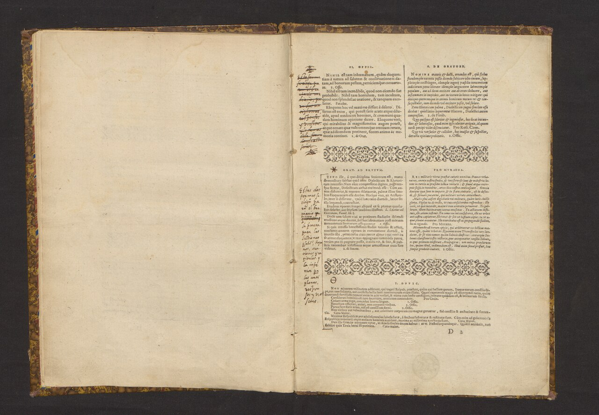
#616 · horizontal · horizontal · 6902x4784 · Public domain File:Christophe Plantin type specimen, 1567 spread 21.tif · 1280x887 https://commons.wikimedia.org/wiki/File:Christophe_Plantin_type_specimen,_1567_spread_21.tif
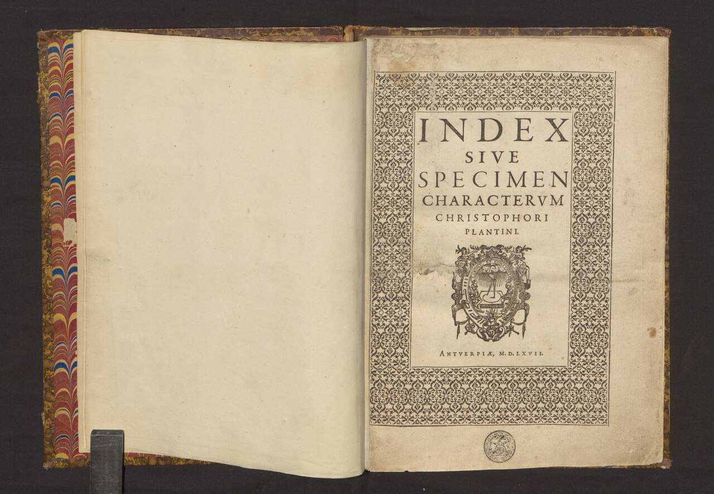
#617 · horizontal · horizontal · 6902x4784 · Public domain File:Christophe Plantin type specimen, 1567 spread 6.tif · 1280x887 https://commons.wikimedia.org/wiki/File:Christophe_Plantin_type_specimen,_1567_spread_6.tif
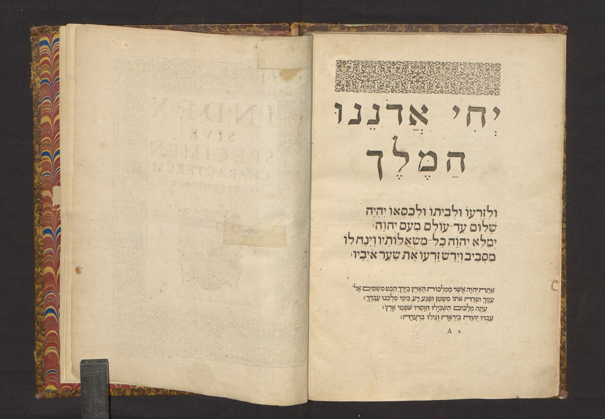
#618 · horizontal · horizontal · 6902x4784 · Public domain File:Christophe Plantin type specimen, 1567 spread 7.tif · 1280x887 https://commons.wikimedia.org/wiki/File:Christophe_Plantin_type_specimen,_1567_spread_7.tif
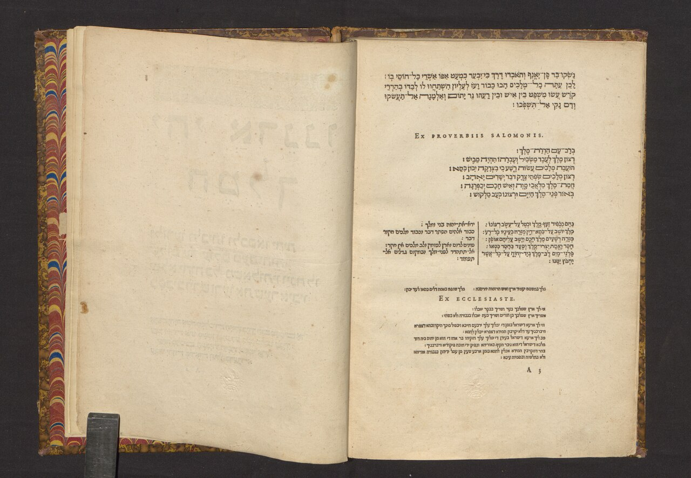
#619 · horizontal · horizontal · 6902x4784 · Public domain File:Christophe Plantin type specimen, 1567 spread 8.tif · 1280x887 https://commons.wikimedia.org/wiki/File:Christophe_Plantin_type_specimen,_1567_spread_8.tif
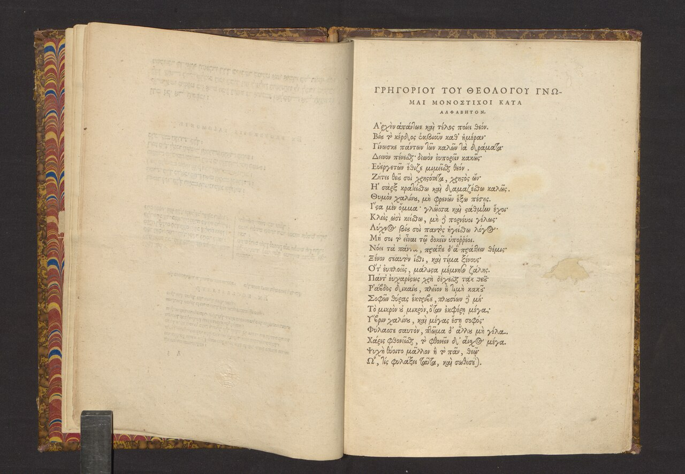
#620 · horizontal · horizontal · 6902x4784 · Public domain File:Christophe Plantin type specimen, 1567 spread 9.tif · 1280x887 https://commons.wikimedia.org/wiki/File:Christophe_Plantin_type_specimen,_1567_spread_9.tif
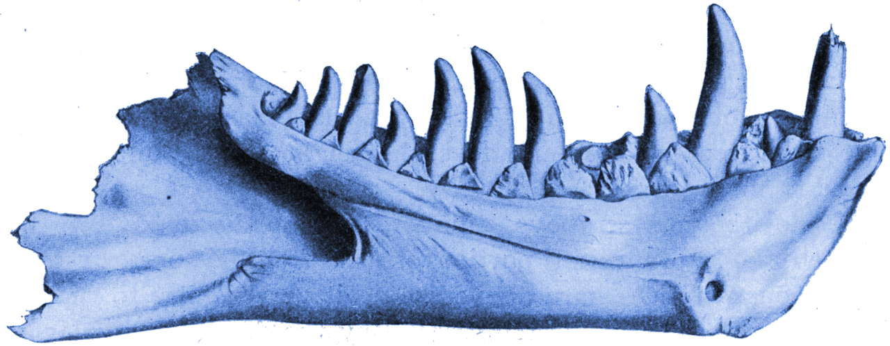
#621 · horizontal · horizontal · 2466x960 · Public domain File:Dynamosaurus Type Specimen Highlighted in Blue.png · 1280x498 https://commons.wikimedia.org/wiki/File:Dynamosaurus_Type_Specimen_Highlighted_in_Blue.png
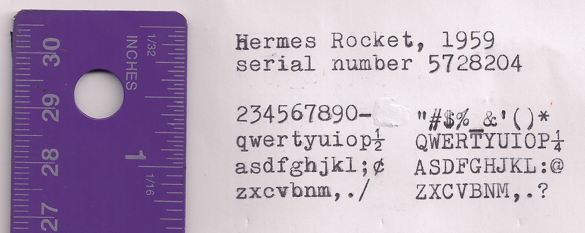
#622 · horizontal · horizontal · 2508x1002 · Public domain File:Hermes Rocket 1959 type specimen.png · 1280x511 https://commons.wikimedia.org/wiki/File:Hermes_Rocket_1959_type_specimen.png
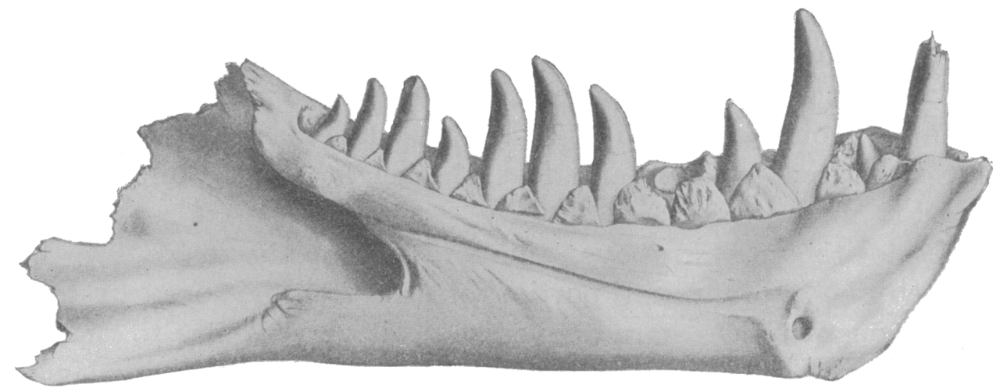
#623 · horizontal · horizontal · 2491x967 · Public domain File:Type Specimen of Dynamosaurus.png · 1280x497 https://commons.wikimedia.org/wiki/File:Type_Specimen_of_Dynamosaurus.png
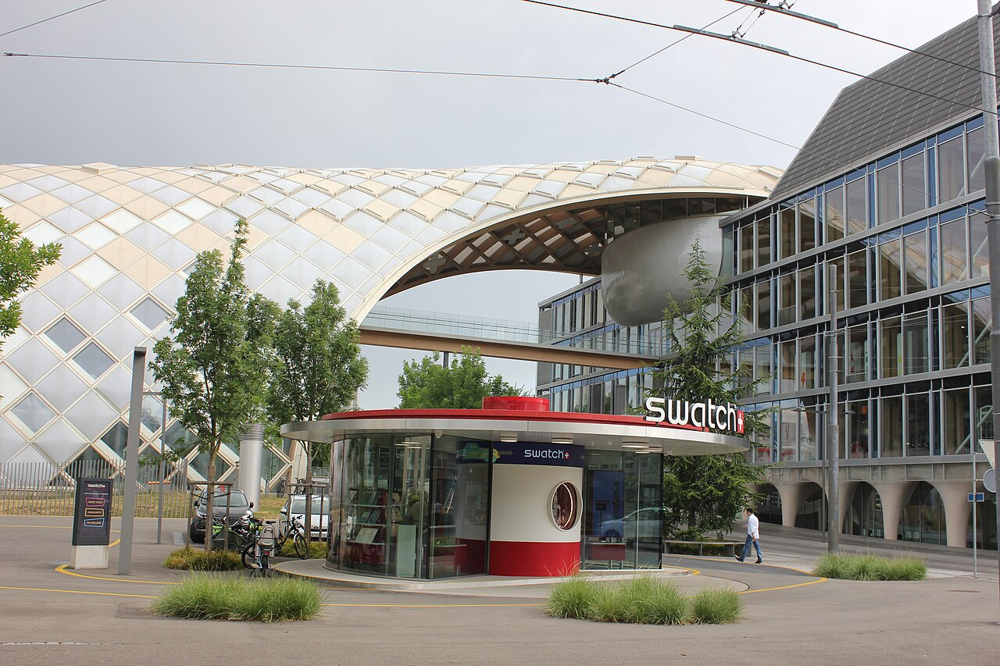
#624 · horizontal · horizontal · 5184x3456 · CC0 File:Cité du Temps, Hauptsitz der Swatch AG, Swatch-Verkauf.jpg · 1280x853 https://commons.wikimedia.org/wiki/File:Cit%C3%A9_du_Temps,_Hauptsitz_der_Swatch_AG,_Swatch-Verkauf.jpg
#629 · horizontal · horizontal · 5827x4331 · Public domain File:A man studying an anatomy text in a studio - DPLA - c3d01d178ef47db6abc46f7082a92376.jpg · 1280x951 https://commons.wikimedia.org/wiki/File:A_man_studying_an_anatomy_text_in_a_studio_-_DPLA_-_c3d01d178ef47db6abc46f7082a92376.jpg
#631 · horizontal · horizontal · 7360x4912 · Public domain File:Darkroom enlargement camera from Edgerton's Photography Studio at the Spindletop-Gladys City Boomtown park, Beaumont, Texas LCCN2014630899.tif · 1280x854 https://commons.wikimedia.org/wiki/File:Darkroom_enlargement_camera_from_Edgerton%27s_Photography_Studio_at_the_Spindletop-Gladys_City_Boomtown_park,_Beaumont,_Texas_LCCN2014630899.tif
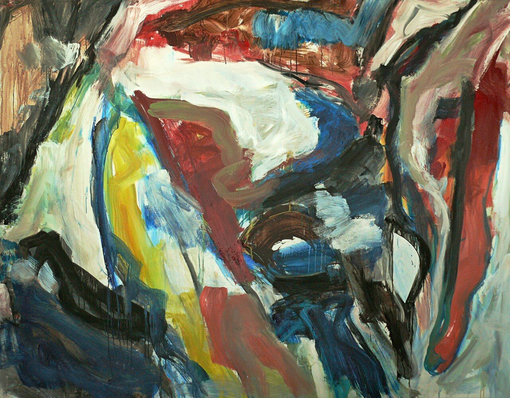
#632 · horizontal · horizontal · 4843x3780 · CC0 File:'Danish Blue' large abstract painting on canvas, created together by artists Ben Vollers & Fons Heijnsbroek in 2008; modern wall art painting - free download art image CC0, high resolutions TIFF.tif · 1280x999 https://commons.wikimedia.org/wiki/File:%27Danish_Blue%27_large_abstract_painting_on_canvas,_created_together_by_artists_Ben_Vollers_%26_Fons_Heijnsbroek_in_2008;_modern_wall_art_painting_-_free_download_art_image_CC0,_high_resolutions_TIFF.tif
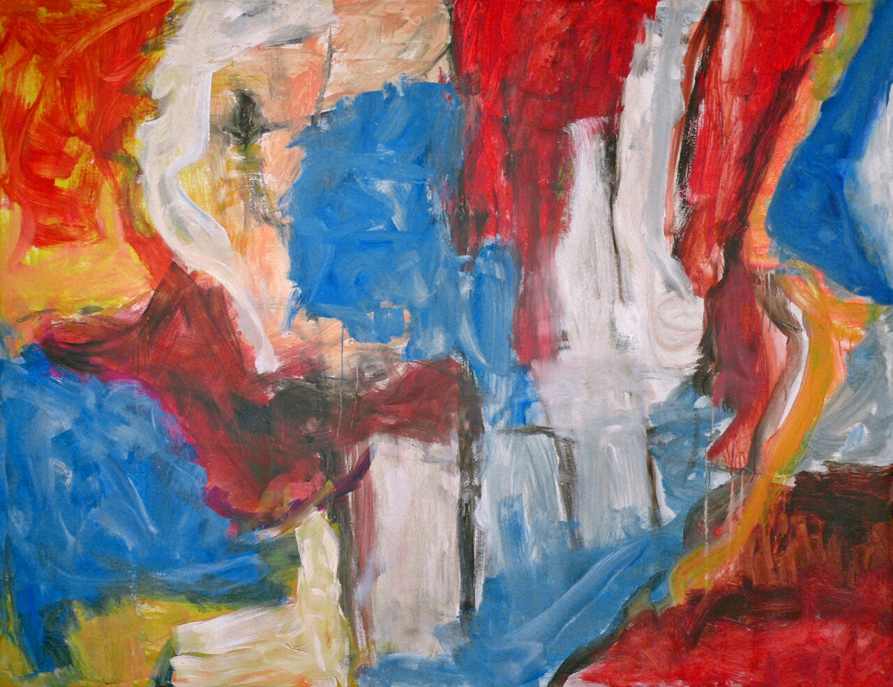
#633 · horizontal · horizontal · 3839x2953 · CC0 File:'Millefleur' large abstract painting on canvas, created together by artists Ben Vollers & Fons Heijnsbroek in 2008; modern wall art painting in sketch - free download art image CC0, high resolutions TIFF.tif · 1280x985 https://commons.wikimedia.org/wiki/File:%27Millefleur%27_large_abstract_painting_on_canvas,_created_together_by_artists_Ben_Vollers_%26_Fons_Heijnsbroek_in_2008;_modern_wall_art_painting_in_sketch_-_free_download_art_image_CC0,_high_resolutions_TIFF.tif
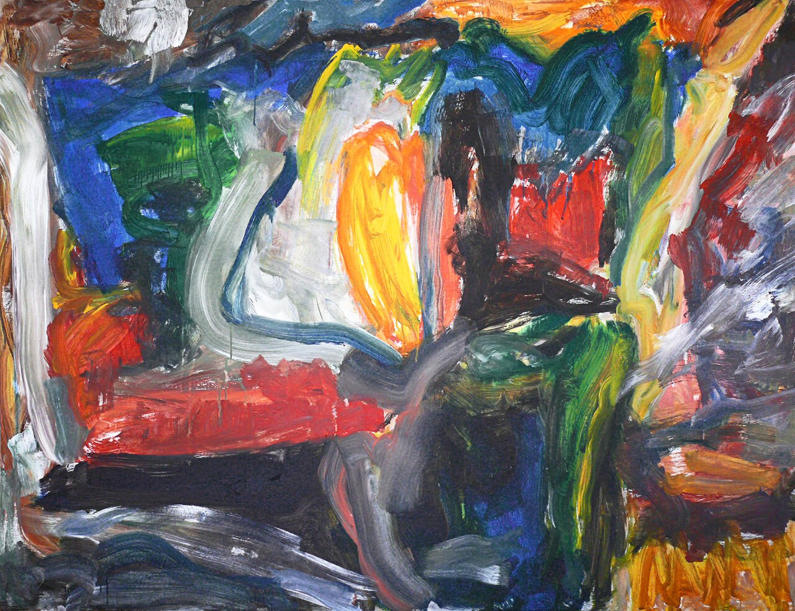
#634 · horizontal · horizontal · 3839x2953 · CC0 File:'Nature's Entry' large abstract painting on canvas, created together by artists Ben Vollers & Fons Heijnsbroek in 2008; modern wall art painting - free download art image CC0, high resolutions TIFF.tif · 1280x985 https://commons.wikimedia.org/wiki/File:%27Nature%27s_Entry%27_large_abstract_painting_on_canvas,_created_together_by_artists_Ben_Vollers_%26_Fons_Heijnsbroek_in_2008;_modern_wall_art_painting_-_free_download_art_image_CC0,_high_resolutions_TIFF.tif
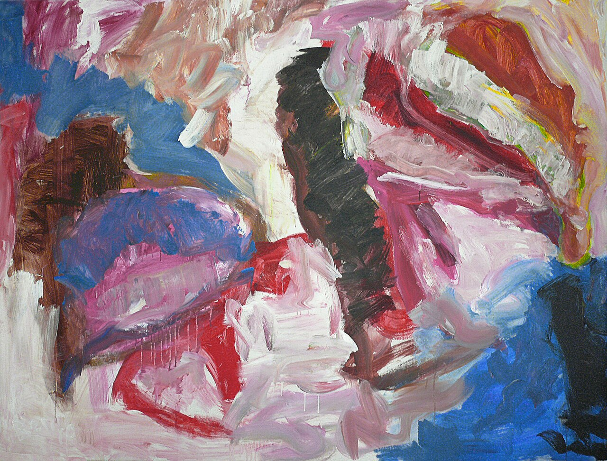
#635 · horizontal · horizontal · 4979x3780 · CC0 File:'Something Else' large abstract painting on canvas, created together by artists Ben Vollers & Fons Heijnsbroek in 2008; modern wall art painting - free download art image CC0, high resolutions TIFF.jpg · 1280x972 https://commons.wikimedia.org/wiki/File:%27Something_Else%27_large_abstract_painting_on_canvas,_created_together_by_artists_Ben_Vollers_%26_Fons_Heijnsbroek_in_2008;_modern_wall_art_painting_-_free_download_art_image_CC0,_high_resolutions_TIFF.jpg#636 · horizontal · horizontal · 4606x3543 · CC0 File:'Tomorrow' large abstract painting on canvas, created together by artists Ben Vollers & Fons Heijnsbroek in 2008; modern wall art painting - free download art image CC0, high resolutions TIFF.tif · 1280x985 https://commons.wikimedia.org/wiki/File:%27Tomorrow%27_large_abstract_painting_on_canvas,_created_together_by_artists_Ben_Vollers_%26_Fons_Heijnsbroek_in_2008;_modern_wall_art_painting_-_free_download_art_image_CC0,_high_resolutions_TIFF.tif#637 · horizontal · horizontal · 3000x2023 · Public domain File:ARTIST RON BLACKBURN PAINTING AN OUTDOOR WALL MURAL AT THE CORNER OF 33RD AND GILES STREETS IN CHICAGO. HE IS ONE OF... - NARA - 556228.jpg · 1280x863 https://commons.wikimedia.org/wiki/File:ARTIST_RON_BLACKBURN_PAINTING_AN_OUTDOOR_WALL_MURAL_AT_THE_CORNER_OF_33RD_AND_GILES_STREETS_IN_CHICAGO._HE_IS_ONE_OF..._-_NARA_-_556228.jpg
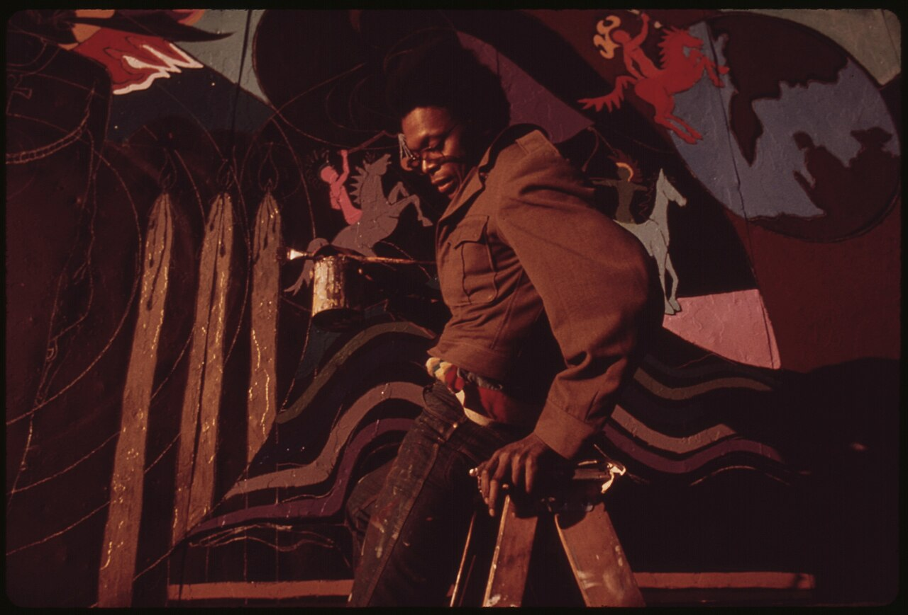
#638 · horizontal · horizontal · 3000x2037 · Public domain File:ARTIST RON BLACKBURN PAINTING AN OUTDOOR WALL MURAL AT THE CORNER OF 33RD AND GILES STREETS IN CHICAGO. HE IS ONE OF... - NARA - 556229.jpg · 1280x869 https://commons.wikimedia.org/wiki/File:ARTIST_RON_BLACKBURN_PAINTING_AN_OUTDOOR_WALL_MURAL_AT_THE_CORNER_OF_33RD_AND_GILES_STREETS_IN_CHICAGO._HE_IS_ONE_OF..._-_NARA_-_556229.jpg
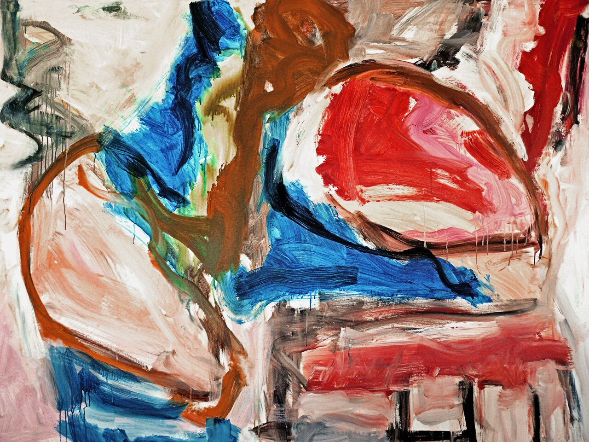
#639 · horizontal · horizontal · 4724x3543 · CC0 File:BenFo18 - abstract painting on canvas, created by artists Ben Vollers & Fons Heijnsbroek in 2008; modern wall art painting - free download image CC0, high resolutions TIFF.tif · 1280x960 https://commons.wikimedia.org/wiki/File:BenFo18_-_abstract_painting_on_canvas,_created_by_artists_Ben_Vollers_%26_Fons_Heijnsbroek_in_2008;_modern_wall_art_painting_-_free_download_image_CC0,_high_resolutions_TIFF.tif
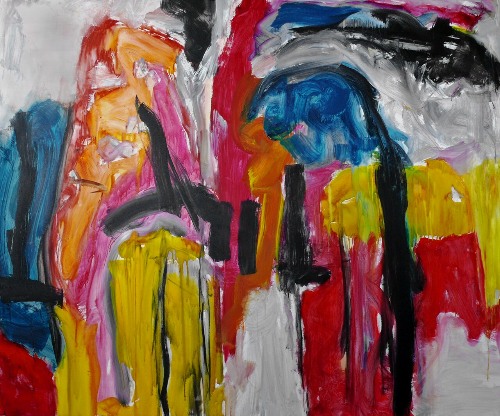
#640 · horizontal · horizontal · 4252x3543 · CC0 File:Lyrical encouter (BenFo 20.) - abstract wall painting, created by artists Ben Vollers & Fons Heijnsbroek (BenFo) in 2008; modern colorful wall art painting - free download image CC0, high resoluti.tif · 1280x1067 https://commons.wikimedia.org/wiki/File:Lyrical_encouter_(BenFo_20.)_-_abstract_wall_painting,_created_by_artists_Ben_Vollers_%26_Fons_Heijnsbroek_(BenFo)_in_2008;_modern_colorful_wall_art_painting_-_free_download_image_CC0,_high_resoluti.tif
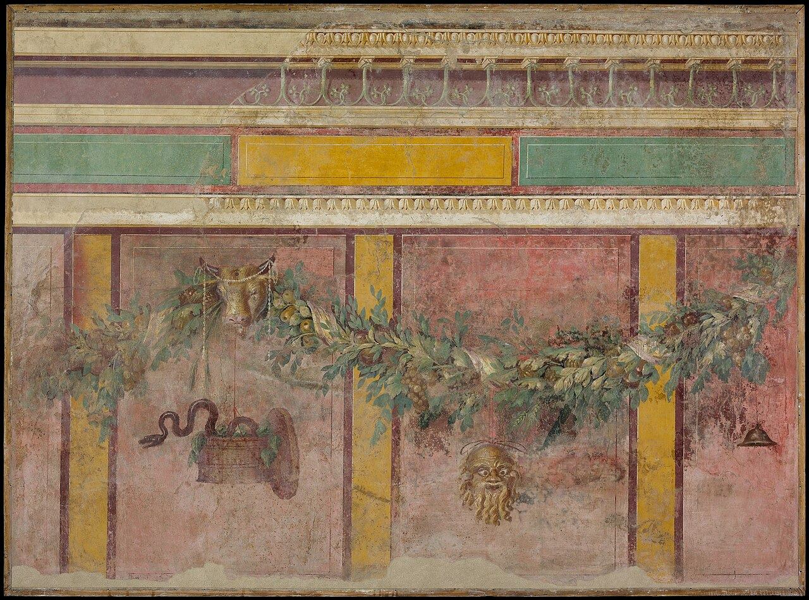
#641 · horizontal · horizontal · 3534x2624 · CC0 File:Wall painting from the west wall of Room L of the Villa of P. Fannius Synistor at Boscoreale MET DP141474.jpg · 1280x950 https://commons.wikimedia.org/wiki/File:Wall_painting_from_the_west_wall_of_Room_L_of_the_Villa_of_P._Fannius_Synistor_at_Boscoreale_MET_DP141474.jpg
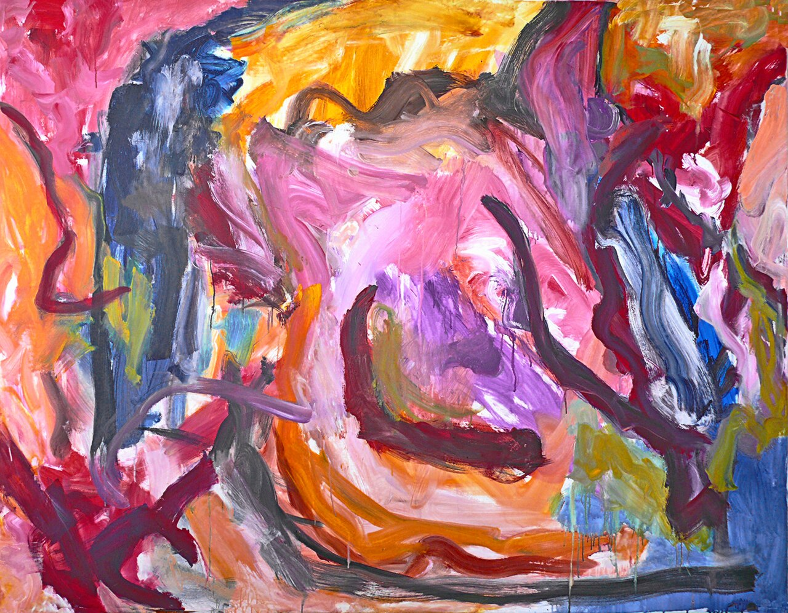
#642 · horizontal · horizontal · 5457x4252 · CC0 File:Zauberwald (BenFo 18.) - abstract wall painting on canvas, created by Dutch artists friends Ben Vollers & Fons Heijnsbroek (BenFo) in 2008; modern wall art painting - free download image CC0, high resolutions TIFF.tif · 1280x997 https://commons.wikimedia.org/wiki/File:Zauberwald_(BenFo_18.)_-_abstract_wall_painting_on_canvas,_created_by_Dutch_artists_friends_Ben_Vollers_%26_Fons_Heijnsbroek_(BenFo)_in_2008;_modern_wall_art_painting_-_free_download_image_CC0,_high_resolutions_TIFF.tif
#653 · horizontal · horizontal · 2802x1718 · CC0 File:Chit chat; or short tales in short words 1834 - British Library - 1578 2088 both covers and spine.jpg · 1280x785 https://commons.wikimedia.org/wiki/File:Chit_chat;_or_short_tales_in_short_words_1834_-_British_Library_-_1578_2088_both_covers_and_spine.jpg#654 · horizontal · horizontal · 3762x2821 · CC0 File:TWGHs S. C. Gaw Memorial College in March 2024.jpg · 1280x960 https://commons.wikimedia.org/wiki/File:TWGHs_S._C._Gaw_Memorial_College_in_March_2024.jpg#655 · vertical · vertical · 3836x4546 · CC0 File:Interieur van een drukkerij, RP-P-2015-26-347.jpg · 1280x1517 https://commons.wikimedia.org/wiki/File:Interieur_van_een_drukkerij,_RP-P-2015-26-347.jpg#656 · vertical · vertical · 1443x1930 · CC0 File:Interieur van een drukkerij met een drukpers en een letterzetter, RP-P-2015-26-34.jpg · 1280x1712 https://commons.wikimedia.org/wiki/File:Interieur_van_een_drukkerij_met_een_drukpers_en_een_letterzetter,_RP-P-2015-26-34.jpg#657 · vertical · vertical · 2345x2856 · Public domain File:'Studio of a Woman Artist' (1800) by Louis Leopold Boilly (1761-1845), oil on canvas, exhibited in Pushkin Museum, Moscow.jpg · 1280x1559 https://commons.wikimedia.org/wiki/File:%27Studio_of_a_Woman_Artist%27_(1800)_by_Louis_Leopold_Boilly_(1761-1845),_oil_on_canvas,_exhibited_in_Pushkin_Museum,_Moscow.jpg#658 · vertical · vertical · 2105x2708 · Public domain File:A Nude Model in an Artist's Studio.jpg · 1280x1647 https://commons.wikimedia.org/wiki/File:A_Nude_Model_in_an_Artist%27s_Studio.jpg#659 · vertical · vertical · 1550x1854 · Public domain File:In The Artist's Studio by A Monvel.jpg · 1280x1531 https://commons.wikimedia.org/wiki/File:In_The_Artist%27s_Studio_by_A_Monvel.jpg#660 · vertical · vertical · 6209x7377 · Public domain File:Jan Vermeer - The Art of Painting - Google Art Project.jpg · 1280x1521 https://commons.wikimedia.org/wiki/File:Jan_Vermeer_-_The_Art_of_Painting_-_Google_Art_Project.jpg#661 · vertical · vertical · 4616x5537 · CC0 File:Martinus Rørbye, Portræt af maleren C.A. Lorentzen, 1827, 0218NMK, Nivaagaards Malerisamling.jpg · 1280x1535 https://commons.wikimedia.org/wiki/File:Martinus_R%C3%B8rbye,_Portr%C3%A6t_af_maleren_C.A._Lorentzen,_1827,_0218NMK,_Nivaagaards_Malerisamling.jpg#662 · vertical · vertical · 1266x1920 · Public domain File:Self Portrait of the Artist in His Studio by Thomas Hovenden 1875.jpeg · 1266x1920 https://commons.wikimedia.org/wiki/File:Self_Portrait_of_the_Artist_in_His_Studio_by_Thomas_Hovenden_1875.jpeg#663 · vertical · vertical · 2000x2471 · Public domain File:The Artist's Studio (Ralli).jpg · 1280x1581 https://commons.wikimedia.org/wiki/File:The_Artist%27s_Studio_(Ralli).jpg#664 · vertical · vertical · 2765x3380 · Public domain File:The Artist in His Studio by Wyatt Eaton, 1873.JPG · 1280x1565 https://commons.wikimedia.org/wiki/File:The_Artist_in_His_Studio_by_Wyatt_Eaton,_1873.JPG